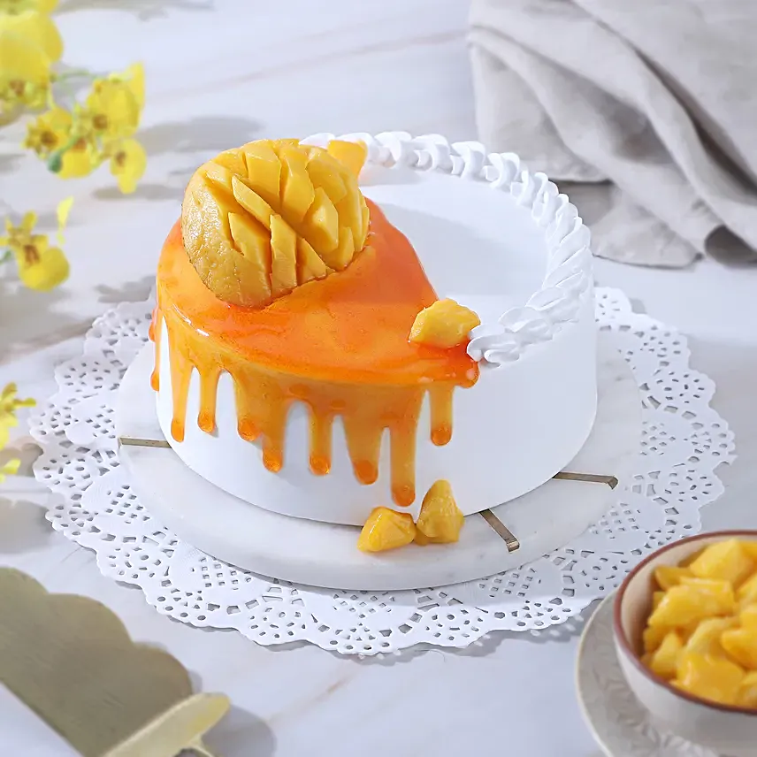

Mango Delight Cake

Ingredients
- 2 cups all-purpose flour
- 1 teaspoon baking powder
- 1/2 teaspoon baking soda
- 1/4 teaspoon salt
- 1/2 cup unsalted butter, softened
- 1 cup granulated sugar
- 2 large eggs
- 1 teaspoon vanilla extract
- 1 cup mango puree (fresh or canned)
- 1/2 cup plain yogurt or sour cream
- Zest of 1 lemon (optional)
Instructions
- Preheat your oven to 350°F (175°C). Grease and flour two 9-inch round cake pans.
- In a medium bowl, sift together the flour, baking powder, baking soda, and salt. Set aside.
- In a large mixing bowl, cream together the softened butter and granulated sugar until light and fluffy.
- Add the eggs one at a time, beating well after each addition. Then, mix in the vanilla extract.
- Add the mango puree and yogurt (or sour cream) to the wet ingredients, and mix until well combined. Optionally, add lemon zest for an extra citrusy flavor.
- Gradually add the dry ingredients to the wet ingredients, mixing until just combined. Be careful not to overmix.
- Divide the batter evenly between the prepared cake pans. Smooth the tops with a spatula. Bake in the preheated oven for 25-30 minutes, or until a toothpick inserted into the center comes out clean.
- Allow the cakes to cool in the pans for 10 minutes, then transfer them to wire racks to cool completely.
- Once the cakes are completely cooled, frost with your favorite frosting or mango cream cheese frosting.
- Serve and enjoy your delightful Mango Delight Cake!
Enjoy your cake!